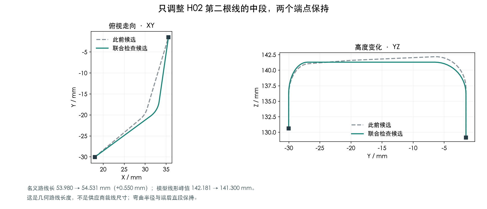
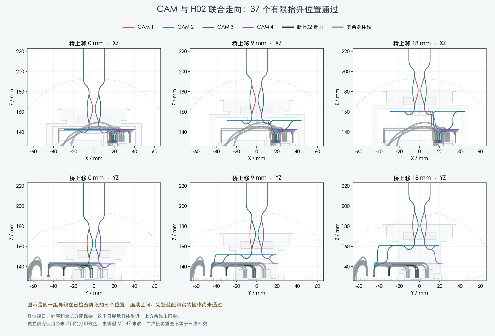
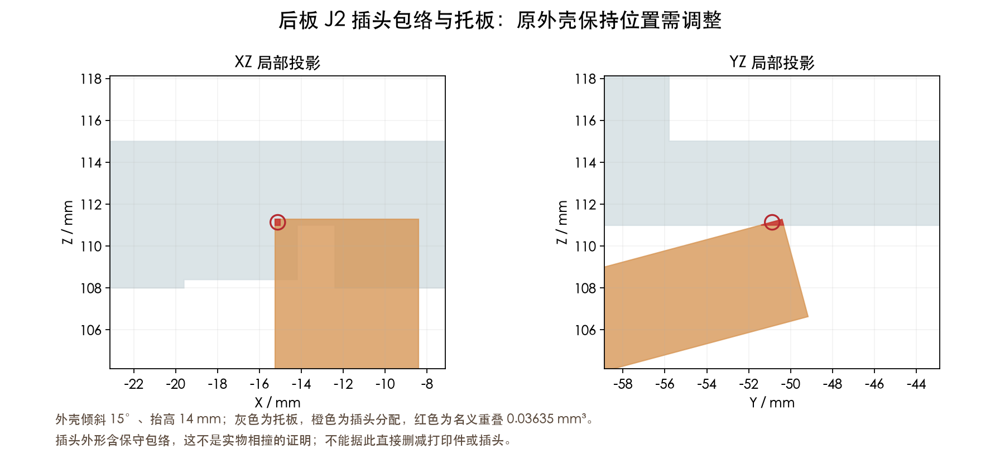

37个有限位置的线束检查通过。完整装配仍有外壳、后板插头和后续送线问题，主模型及制造图尚未更新。
端口、针序、端后直段和弯曲半径保持；名义路线 53.980 → 54.531mm，增加 0.550mm。这不是供应商裁线尺寸。

| 范围 | 结果 |
|---|---|
| 四根CAM与两根H02，桥抬升0–18mm | 37个有限位置；14根身体线均保留 |
| CAM六对导线 | 最小保守间隙0.439mm |
| H02提前装入 | 201个开敞装入位置 |
| H02对后续运动零件 | 408个身体位置及130个头部姿态 |
这些是分别限定范围的几何结果，不能相加当作完整装配验证。

补查后板插头与托板的相对运动后，原“15°倾斜、14mm抬高”的位置，J2插头包络与托板有约0.03635mm³重叠。提前后移外壳的6种动作仍未通过此处。

此胶壳模型含保守包络，不等于实物相撞已经确认。需要核对拔插时机和实际外形。直接继续抬高还会遇到H04线；继续后移桥的弯线动作也尚未完成。
先完成后板接口的装配时机与外壳路径，再连接后续送线动作。H01/H04带线装入、其他跨关节线、FPC、扎带和人手支承仍待完成。
使用既有未采用的结构候选；主模型M1.47与PCB保持。供应商制作方式已确认，裁线图仍未放行。